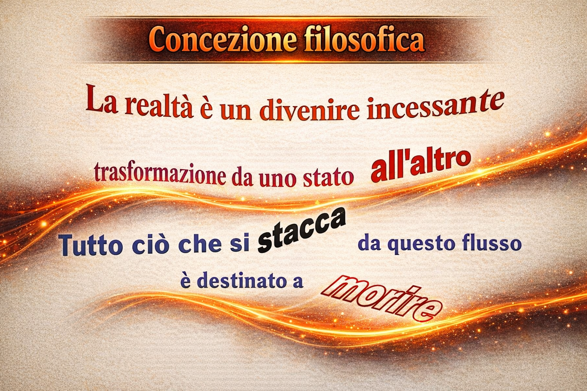
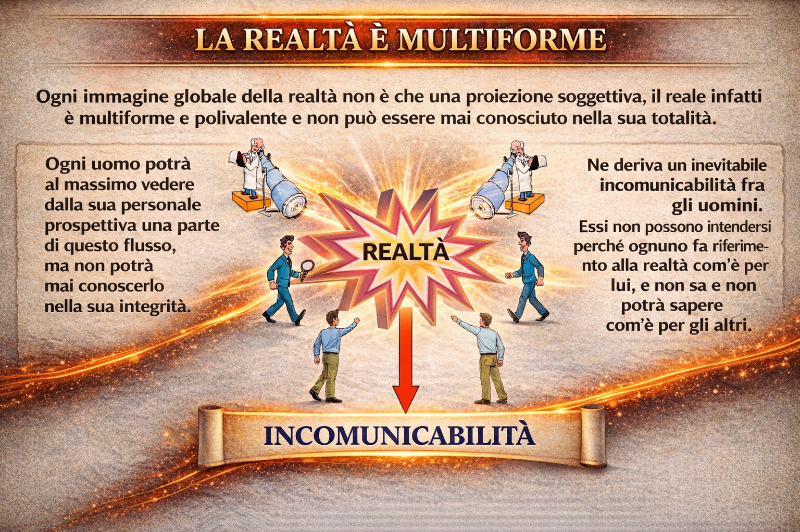
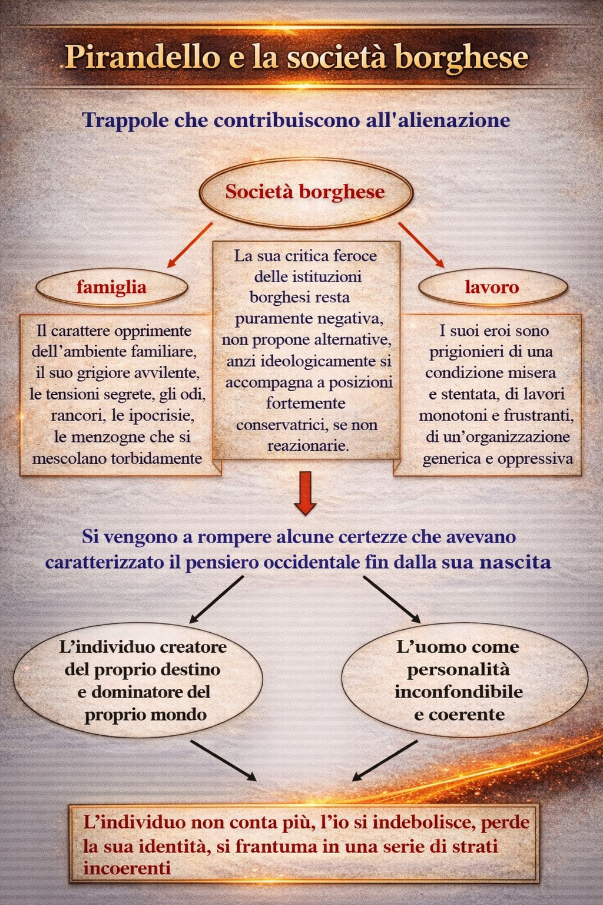

La visione del mondo
Le opere di Pirandello si fondano su un presupposto filosofico: il vitalismo di Bergson. Secondo questa concezione, la vita è un divenire incessante, un flusso continuo di trasformazioni. Ogni essere passa da uno stato all’altro e chi tenta di sottrarsi a questo movimento perenne, fissandosi in una forma immobile, si condanna alla morte interiore.

Da tale visione nasce uno dei temi centrali della sua opera: l’incomunicabilità. L’uomo europeo del primo Novecento vive in una società complessa, artificiale e spesso estranea. Ha perduto le certezze legate al mondo contadino, fatto di ritmi naturali e di cose semplici che davano senso all’esistenza, sostituendole con un tempo e uno spazio innaturali, propri della modernità.

Pirandello estende la sua critica alle strutture portanti della civiltà occidentale. La famiglia diventa luogo di incomunicabilità e rancori; il lavoro si riduce a meccanismo alienante che priva l’uomo della propria identità. Così, i pilastri della società borghese si rivelano maschere collettive che nascondono il vuoto.
